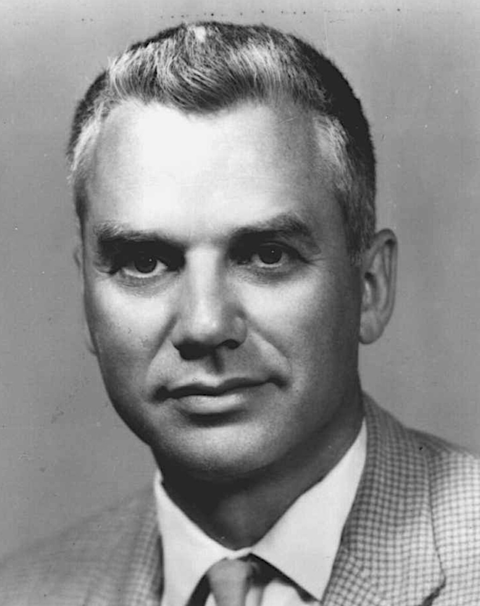
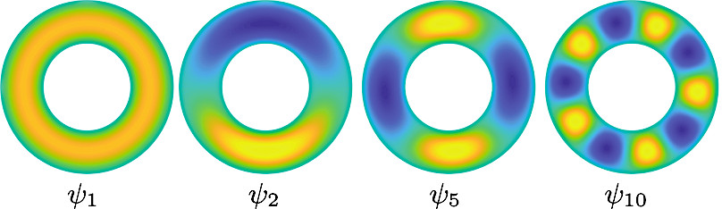

Consider a continuous time Markov process \(X_t\) on the time interval \([0,T]\) and with value in the state space \(\mathcal{X}\). This defines a probability \(\mathbb{P}\) on the set of \(\mathcal{X}\)-valued paths. Now, it is often the case that one has to consider a perturbed probability distribution \(\mathbb{Q}\) defined as
\[ \frac{d\mathbb{Q}}{d\mathbb{P}}(x_{[0,T]}) = \frac{1}{\mathcal{Z}} \, \exp[g(X_T)] \tag{1}\]
for a (typically unknown) normalization constant \(\mathcal{Z}\) and some function \(g: \mathcal{X}\to \mathbb{R}\). For example, collecting a noisy observation \(y_T \sim \mathcal{F}(X_T) + \textrm{(noise)}\) at time \(T\), the distribution \(\mathbb{Q}\) defined with the log-likelihood function \(g(x) = \log \mathop{\mathrm{P}}(y_T \mid X_T=x)\) describes the dynamics of the Markov process \(X_t\) conditioned on the observation \(y_T\); we will use this interpretation in the following since this is the most common use case and gives the most intuitive interpretation. Doob h-transforms are a powerful tool to describe the dynamics of the conditioned process.
For convenience, let us use the notation \(\mathop{\mathrm{E}}_x[\ldots] \equiv \mathop{\mathrm{E}}[\ldots \mid x_t=x]\). For a test function \(\varphi: \mathcal{X}\to \mathbb{R}\) and a time increment \(\delta > 0\), we have
\[ \begin{align*} \mathop{\mathrm{E}}[\varphi(x_{t+\delta}) | x_t, y_T] &= \mathop{\mathrm{E}}_{x_t}[\varphi(x_{t+\delta}) \, \exp(g(x_T)) ] \, / \, \mathop{\mathrm{E}}_{x_t}[\exp(g(x_T))]\\ &= \frac{ \mathop{\mathrm{E}}_{x_t}[\varphi(x_{t+\delta}) \, h(t+\delta, x_{t+\delta})] }{h(t, x)}. \end{align*} \tag{2}\]
We have introduced the important function \(h:[0,T] \times \mathcal{X}\to \mathbb{R}\) defined as
\[ h(t, x) \; = \; \mathop{\mathrm{E}} {\left[ \exp[g(x_T)] \mid x_t = x \right]} \; = \; \mathbb{P}(y_T \mid x_t = x). \]
One can readily check that the function \(h\) satisfies the Kolmogorov equation
\[ (\partial_t + \mathcal{L}) \, h = 0 \]
with boundary condition \(h(T,x) = \exp[g(x)]\). Furthermore, denoting by \(\mathcal{L}\) the infinitesimal generator of the Markov process \(X_t\), we have:
\[ \begin{align*} \mathop{\mathrm{E}}_{x_t}[\varphi(x_{t+\delta}) & h(t+\delta, x_{t+\delta}) ] \; \approx \; \varphi(x_t) h(t, x_t) \\ &+ \; \delta \, (\partial_t + \mathcal{L})[h \, \varphi] \, (t, x_t) \; + \; o(\delta). \end{align*} \tag{3}\]
The infinitesimal generator \(\mathcal{L}^{\star}\) of the conditioned process is
\[ \mathcal{L}^{\star} \varphi(t, x_t) = \lim_{\delta \to 0^+} \; \frac{\mathop{\mathrm{E}}[\varphi(x_{t+\delta}) | x_t, y_T] - \varphi(x_t)}{\delta}. \]
Plugging Equation 3 within Equation 2 directly gives that
\[ \mathcal{L}^{\star} \varphi\; = \; \mathcal{L}\varphi+ \frac{\mathcal{L}[\varphi\, h]}{h} + \varphi\frac{\partial_t h}{h}. \]
The generator \(\mathcal{L}^{\star}\) describes the dynamics of the conditioned process. In fact, the same computation holds with a more general change of measure of the type \[ \textcolor{green}{\frac{d\mathbb{Q}}{d\mathbb{P}}(x_{[0,T]}) = \frac{1}{\mathcal{Z}} \, \exp {\left\{ \int_{0}^T f(s, X_s) \, ds + g(x_T) \right\}} } \tag{4}\]
for some function \(f:[0,T] \times \mathcal{X}\to \mathbb{R}\). One can define the function \(h\) similarly as
\[ \textcolor{green}{ h(t, x_t) \; = \; \mathop{\mathrm{E}} {\left[ \exp {\left\{ \int_{t}^T f(X_s) \, ds + g(x_T) \right\}} \mid x_t \right]} }. \tag{5}\]
This function satisfies the Feynman-Kac formula \((\partial_t + \mathcal{L}+ f) \, h = 0\) and one obtains entirely similarly that the probability distribution \(\mathbb{Q}\) describes a Markov process with infinitesimal generator
\[ \textcolor{green}{\mathcal{L}^{\star} \varphi\; = \; \mathcal{L}\varphi+ \frac{\mathcal{L}[h \, \varphi]}{h} + {\left( \frac{\partial_t h} {h} + f \right)} \, \varphi.} \tag{6}\]
To see how this works, let us see a few examples:
General diffusions
Consider a diffusion process
\[ dX = b(X) \, dt + \sigma(X) \, dW \]
with generator \(\mathcal{L}\varphi= b \nabla \varphi+ \tfrac12 \, \sigma \sigma^\top : \nabla^2 \varphi\) and initial distribution \(\mu_0(dx)\). We are interested in describing the dynamics of the “conditioned” process given by the probability distribution \(\mathbb{Q}\) defined in Equation 4. Algebra applied to Equation 5 then shows that
\[ \mathcal{L}^\star \varphi\; = \; \mathcal{L}\varphi+ \underbrace{\frac{\varphi\, (\partial_t + \mathcal{L}+ f)[h]}{h}}_{=0} + \sigma \, \sigma^\top \, (\nabla \log h) \, \nabla \varphi \]
where the function \(h\) is described in Equation 5. Since \((\partial_t + \mathcal{L}+ f) \, h = 0\), this reveals that the probability distribution \(\mathbb{Q}\) describes a diffusion process \(X^\star\) with dynamics
\[ dX^\star = b(X^\star) \, dt + \sigma(X^\star) \, {\left\{ dW + \textcolor{blue}{u^\star(t, X^\star)} \, dt \right\}} . \]
The additional drift term \(\sigma(X^\star) \, \textcolor{blue}{u^\star(t, X^\star)} \, dt\) is involves a “control” \( \textcolor{blue}{u^\star(t, X^\star)}\) with \[ \textcolor{blue}{u^\star(t, x) = \sigma^\top(x) \, \nabla \log h(t, x)}. \tag{7}\]
Note that the initial distribution of the conditioned process is
\[ \mu_0^\star(dx) = \frac{1}{\mathcal{Z}} \, \mu_0(dx) \, h(0,x). \]
Unfortunately, apart from a few straightforward cases such as a Brownian motion or an Ornstein-Uhlenbeck process, the function \(h\) is generally intractable. However, there are indeed several numerical methods available to approximate it effectively.
Brownian bridge
What about a Brownian motion in \(\mathbb{R}^D\) conditioned to hit the state \(x_\star \in \mathbb{R}^D\) at time \(t=T\), i.e. a Brownian bridge? In that case, the function \(h\) is given by
\[ h(t,x) = \mathop{\mathrm{P}}(B_T = x_\star \mid B_t = x) = \exp {\left\{ -\frac{\|x-x_\star\|^2}{2 \, (T-t)} \right\}} / \mathcal{Z}_{T-t} \]
for some irrelevant normalization constant \(\mathcal{Z}_{T-t}\) that only depends on \(T-t\). Plugging this into Equation 7 gives that the conditioned Brownian \(X^{\star}\) motion has dynamics
\[ dX^\star \;=\; \textcolor{blue}{- \frac{X^\star - x_\star}{T-t} \, dt} + dB. \]
The additional drift term \(-(X^\star - x_\star)/(T-t)\) is intuitive: it points in the direction of \(x^\star\) and gets increasingly large as \(t \to T\).
Positive Brownian motion
What about a scalar Brownian conditioned to stay positive at all times? Let us consider \(T\) and let us condition first on the event that the Brownian motion stays positive within \([0,T]\) and later consider the limit \(T \to \infty\). The function \(h\) reads
\[ h(t,x) = \mathop{\mathrm{P}} {\left( \text{$B_t$ stays $>0$ on $[t,T]$} \mid B_t=x \right)} . \]
This can easily be calculated with the reflection principle. It equals
\[ h(t,x) = 1 - 2 \, \mathop{\mathrm{P}}(B_T < 0 \mid B_T = x) = \mathop{\mathrm{P}}(\sqrt{T-t} \, \| \xi \| < x) \]
for a standard Gaussian \(\xi \sim \mathcal{N}(0,1)\). Plugging this into Equation 7 gives that the additional drift term is
\[ \nabla \log h(t,x) = \frac{\exp {\left( -x^2 / (2 \, (T-t)) \right)} }{x} \quad \to \quad \frac{1}{x} \]
as \(T \to \infty\). This shows that a Brownian motion conditioned to stay positive at all times has a upward drift of size \(1/x\),
\[ dX^\star \;=\; \frac{1}{X^{\star}} + dB. \]
Incidentally, it is the dynamics of a Bessel process of dimension \(d=3\), i.e. the law of the modulus of a three-dimensional Brownian motion. More generally, if one conditions a Brownian motion to stay within a closed domain \(\mathcal{D}\), the conditioned dynamics exhibit a repulsive drift term of size about \(1/\textrm{dist}(x, \partial \mathcal{D})\) near the boundary \(\partial \mathcal{D}\) of the domain, as described below.
Brownian motion staying in a domain
What about a Brownian motion conditioned to stay within a domain \(\mathcal{D}\) forever? As before, consider an time horizon \(T\) and define the function \(h\) as
\[ h(t,x) = \mathop{\mathrm{P}} {\left( \text{$B_t$ stays in $\mathcal{D}$ on $[t,T]$} \mid B_t=x \right)} . \]
One can see that the function \(h\) satisfies the PDE
\[ (\partial_t + \Delta) \, h = 0 \]
and equals zero on the boundary \(\partial \mathcal{D}\) of the domain. Furthermore \(h(t,x) \to 1\) as \(t \to T\) for all \(x \in \mathcal{D}\). Consider the eigenfunctions \(\psi_k\) of the negative Laplacian \(-\Delta\) with Dirichlet boundary conditions on \(\partial \mathcal{D}\). Recall that \(-\Delta\) is a positive operator with a discrete spectrum \(\lambda_1 \leq \lambda_2 \leq \ldots\) of non-negative eigenvalues. The eigenfunction corresponding to the smallest eigenvalue \(\lambda_1\) is the principal eigenfunction \(\psi_1\) and it is standard that it is a positive function within the domain \(\mathcal{D}\), as a “slight” generalization of the Perron-Frobenius in linear algebra shows it. Expanding \(h\) in the basis of eigenfunctions \(\psi_k\) gives that
\[ h(t,x) = \underbrace{c_1 \, e^{-\lambda_1 \, (T-t)} \, \psi_1(x)}_{\textrm{dominant contribution}} + \sum_{k \geq 2} c_k \, e^{-\lambda_k \, (T-t)} \, \psi_k(x). \]

Since we are interested in the regime \(T \to \infty\), it holds that
\[ \nabla_x \log h(t,x) \; \to \; \nabla \log \psi_1(x).\]
This shows that the conditioned Brownian motion has a drift term expressed in terms of the principal eigenfunction \(\psi_1\) of the Laplacian:
\[ dX^\star \;=\; \textcolor{blue}{ \nabla \log \psi_1(X^\star) \, dt} + dB. \]
For example, if \(\mathcal{D}\equiv [0,L]\) for a 1D Brownian motion, the principal eigenfunction is \(\psi_1(x) = \sin(\pi \, x /L)\). This shows that there is a upward drift of size \(\sim 1/x\) near \(x \approx 0\) and a downward drift of size \(\sim 1/(L-x)\) near \(x \approx L\).